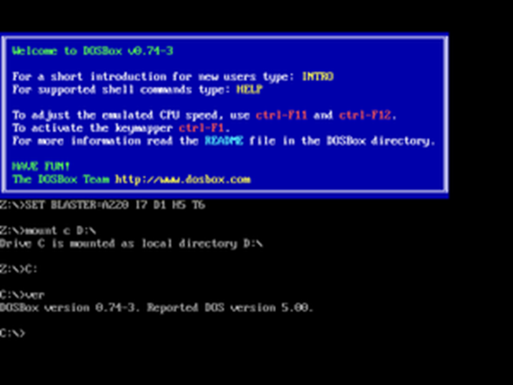

In terms of the opportunities presented by digital preservation, there are many types of those active. One such opportunity lies in the archival department, where content produced digitally is collected for today’s people and for the future generations to come, to be accessed and viewed. According to the National Library of New Zealand, which has a digital preservation programme, they provide a platform to archive digital publications, websites, photos, music, video, emails, and electronic books. Through this process, the National Library of New Zealand can hold veritable amounts of evidence should the need arise, to hold governments accountable to preserving such information. Archival of digital information can also hold social and cultural records of a time, such as a famous cartoon depicting certain real world events, certain phrases and the context behind it and important videos that document social issues and culture. This can also help with many institutions looking to preserve academia and intellectual assets throughout the times, allowing students, professors, and researchers to take part in the preservation of knowledge allowing for digital inclusion. A great example of this can be found in many open-source emulation projects, which try to run different applications from different devices or operating systems such as DOSBox, an emulation tool for older DOS based applications which do not run on current computer operating systems, to software like BlueStacks, an application to run Android applications on desktop operating systems.
 Made 1 March 2021thanks to W3C for tutorial and adapted code from Style Examples
also thanks to WDN for HTML and CSS resources and any adapted code snippets from Mozilla Developer Network